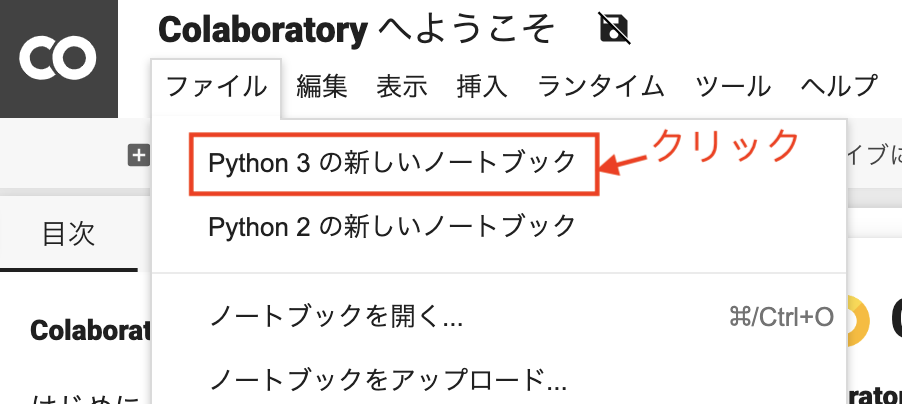
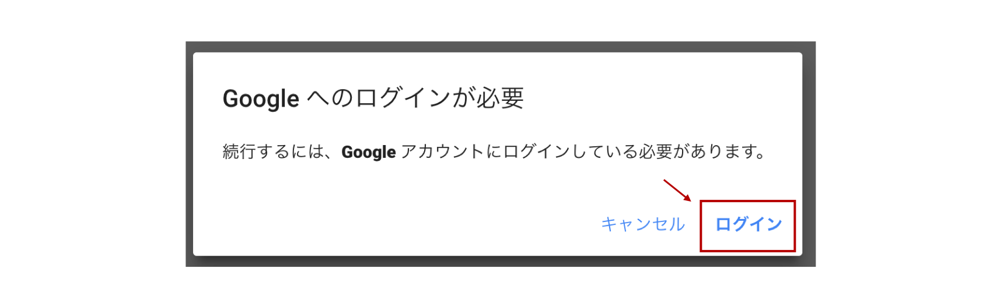
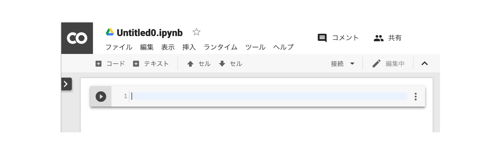
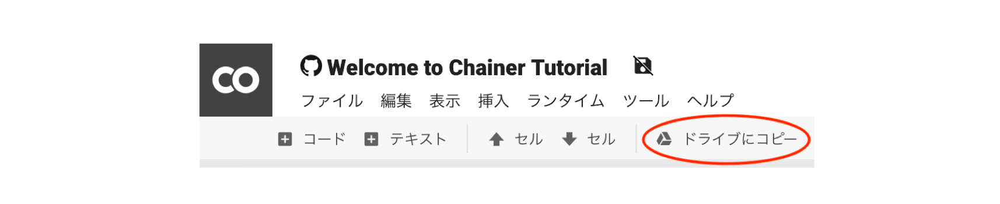
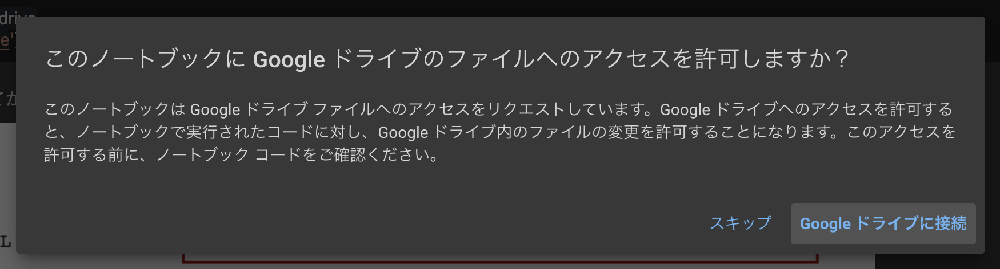
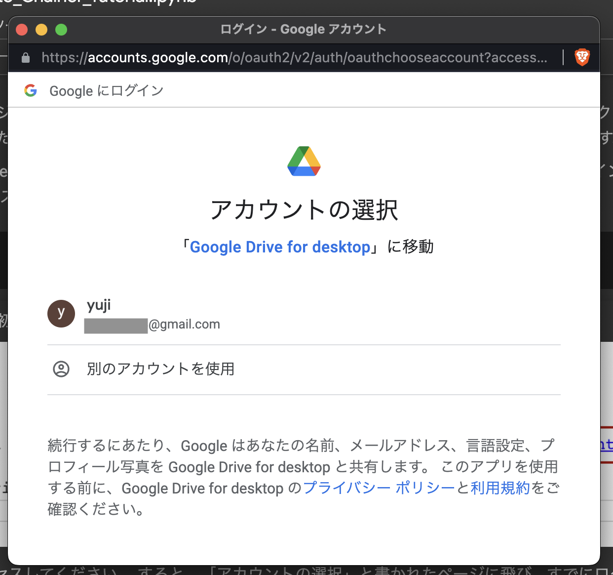
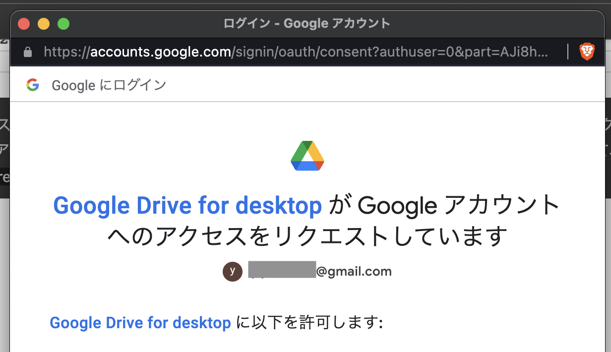
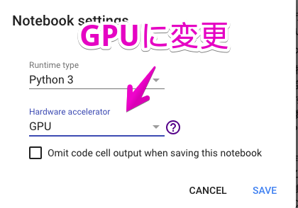

はじめに#
このチュートリアルは、機械学習やディープラーニングの仕組みや使い方を理解したい大学学部生以上の方に向けて書かれたオンライン学習資料です
機械学習の勉強を進めるために必要な数学の知識から、Python というプログラミング言語を用いたコーディングの基本、機械学習・ディープラーニングの基礎的な理論、画像認識や自然言語処理などに機械学習を応用する方法に至るまで、幅広いトピックを解説しています。
機械学習を学び始めようとすると、ある程度、線形代数や確率統計といった数学の知識から、何らかのプログラミング言語が使えることなどが必要となってきます。 しかし、そういった数学やプログラミングの全てに精通していなければ機械学習について学び始められないかというと、必ずしもそうではありません。
本チュートリアルでは、機械学習やディープラーニングに興味を持った方が、まず必要になる最低限の数学とプログラミングの知識から学び始められるように、資料を充実させています。
そのため、できる限りこのサイト以外の教科書や資料を探さなくても、このサイトだけで機械学習・ディープラーニングに入門できることを目指して、作られています。初学者の方が「何から学び始めればいいのか」と迷うことなく学習を始められることを目指したサイトです。
また、本チュートリアルの特徴として、資料の中に登場するコードが、Google Colaboratory というサービスを利用することでそのままブラウザ上で実行できるようになっているという点があります。
ブラウザだけでコードを書き、実行して、結果を確認することができれば、説明に使われたサンプルコードを実行して結果を確かめるために、手元のコンピュータで環境構築を行う必要がなくなります。
本章ではまず、この Google Colaboratory というサービスの利用方法を説明します。
必要なもの#
Google アカウント（お持ちでない場合は、こちらからお作りください：Google アカウントの作成）
ウェブブラウザ（ Google Colaboratory はほとんどの主要なブラウザで動作します。PC 版の Chrome と Firefox では動作が検証されています。）
Google Colaboratory の基本#
Google Colaboratory（以下 Colab ）は、クラウド上で Jupyter Notebook 環境を提供する Google のウェブサービスです。Jupyter Notebook はブラウザ上で主に以下のようなことが可能なオープンソースのウェブアプリケーションであり、データ分析の現場や研究、教育などで広く用いられています。
プログラムを実行と、その結果の確認
Markdown と呼ばれる文章を記述するためのマークアップ言語を使った、メモや解説などの記述の追加
Colab では無料で GPU も使用することができますが、そのランタイムは最大 12 時間で消えてしまうため、長時間を要する処理などは別途環境を用意する必要があります。 学びはじめのうちは、数分から数時間程度で終わる処理がほとんどであるため、気にする必要はありませんが、本格的に使っていく場合は有料のクラウドサービスを利用するなどして、環境を整えるようにしましょう。
以降では、その基本的な使い方を説明します。
Colab を開く#
まずは以下のURLにアクセスして、ブラウザで Colab を開いてください。
https://colab.research.google.com/
「Colaboratory へようこそ」というタイトルの Jupyter Notebook が表示されます。
次に、タイトルの下にある 「ファイル」 から、「Python 3 の新しいノートブック」 を選択し、まっさらな Jupyter Notebook を作成しましょう。

Google アカウントにまだログインしていなかった場合は、以下のようなメッセージが表示されます。

その場合は、「ログイン」 をクリックして、Google アカウントでログインしてください。
ログインが完了すると、以下のような画面が表示され、準備完了です。 もうすでに Python を使ったプログラミングを開始する準備が整っています。

Open in Colab ボタン#
このチュートリアルの一部の章には、Open in Colab と書かれた以下のようなボタンがページ上部に設置されています。

このボタンを押すと、ブラウザで見ている資料が、Colab 上で Jupyter Notebook として開かれます。 すると、チュートリアルの中で説明に用いられているコードを、実際に実行して結果を確認することができます。
それでは、早速上のボタンか、このページの上部に配置されている Open in Colab ボタンを押して、このページを Colab で開いてください。
すると、Playground モード という編集不可な状態でノートブックが Colab 上で開かれます。
そこで、下図の位置にある ドライブにコピー というボタンを押して、自分の Google Drive 上にこのノートブックをコピーしてください。
このボタンを押すと、コピーされたノートブックが自動的に開き、以降は内容に編集を加えたり、コードを実行したりすることができます。

この
Open in Colabから Colab へ移動自分のドライブへノートブックをコピーする
コードを実行しながら解説を読んでいく
という手順が、本チュートリアルサイトのおすすめの利用方法です。
Colab の基本的な使い方#
Colab 上の Jupyter Notebook を以降、単にノートブックと呼びます。
ノートブックは、複数のセルと呼ばれるブロックを持つことができます。 新しいノートブックを作った直後では、何も書かれていないセルが一つだけ存在している状態になっています。 セルの内側のどこかをクリックすると、そのセルを選択することができます。
セルには、コードセルとテキストセルの 2 種類があります。 コードセル は Python のコードを書き込み、実行するためのセルであり、テキストセルは、Markdown 形式で文章を書くためのセルです。
それぞれのセルタイプについてもう少し詳しく説明をします。
コードセル#
コードセルは、Python のコードを書き込み、実行することができるセルです。
実行するには、コードセルを選択した状態で、Shift + Enter を押します。
試しに、下のセルを選択して、Shift + Enter を押してみてください。
print('Hello world!')
Hello world!
すぐ下に、Hello world! という文字列が表示されました。
上のセルに書き込まれているのは Python のコードで、与えられた文字列を表示する関数である print() に、'Hello world!' という文字列を渡しています。
これを今実行したため、その結果が下に表示されています。
プログラミング言語の Python については、次の章 でより詳しく解説します。
テキストセル#
テキストセルでは、Markdown 形式で記述された文章を扱います。 試しに、このセルをダブルクリックしてみてください。 テキストセルが編集モードになり、Markdown 形式で文章を装飾するための、先程までは表示されていなかった記号が見えるようになります。
その状態で Shift + Enter を押してみましょう。
もとのレンダリングされた文章の表示に戻ります。
Colab から Google Drive を使う#
Google Drive というオンラインストレージサービスを Colab で開いたノートブックから利用することができます。 ノートブック中でコードを実行して作成したファイルなどを保存したり、逆に Google Drive 上に保存されているデータを読み込んだりすることができます。
Colab 上のノートブックから Google Drive を使うには、Colab 専用のツールを使って、/content/drive というパスに現在ログイン中の Google アカウントが持っている Google Drive のスペースをマウントします。
from google.colab import drive
drive.mount('/content/drive')
---------------------------------------------------------------------------
ModuleNotFoundError Traceback (most recent call last)
Cell In[2], line 1
----> 1 from google.colab import drive
2 drive.mount('/content/drive')
ModuleNotFoundError: No module named 'google'
このノートブックを Colab で開いて、上のコードセルを実行すると、以下のようなメッセージが表示されます。
{kind=link}
「Google ドライブに接続」をクリックすると下図のウィンドウが表示されるので、どのアカウントの Google ドライブに接続するかを選択してください。
{kind=link}
アカウントを選択すると、下図のウィンドウが表示されます。このウィンドウ下部の「許可」ボタンをクリックすることで Colab が Google ドライブにアクセスすることができるようになります。
{kind=link}
Mounted at /content/drive と表示されたら、準備は完了です。
以下のセルを実行して、自分の Google Drive が Colab からアクセス可能になっていることを確認してください。
# 'My Drive'の表記が出ていればマウントがうまく行われています。
!ls 'drive/'
'My Drive'
上のセルで実行しているのは Python のプログラムではなく、シェルコマンドの一つです。
Jupyter Notebook では、コードセル中で ! が先頭に付いている行はシェルコマンドとして解釈されます。!ls は、次に続くディレクトリの中にあるファイルまたはディレクトリの一覧を表示せよ、という命令（コマンド）です。
GPU を使用する#
GPU とは単純な多くの計算を同時に処理するハードウェアです。 大規模なデータを分析したり深層学習モデルを学習したりする際は、GPU を使用することでプログラムの実行速度を高速化できます。
Colab では GPU を無料で使用することができます。 初期設定では GPU を使用しない設定となっているため、GPU を使用する場合は設定を変更する必要があります。
GPU を使用する場合は、画面上部のタブの中の 「Runtime」 (または「ランタイム」) をクリックし、「Change runtime type」 (または「ランタイムのタイプを変更」)を選択します。
そして、下記の画像の様に 「Hardware accelerator」 (または「ハードウェアアクセラレータ」)を GPU に変更します。

これで Colab 上で GPU を使用できるようになりました。
Colab の便利なショートカット#
Colab を使用中に、セルのタイプの変更やセルの複製・追加などの操作をする場合は、メニューから該当する項目を選ぶ方法以外に、キーボードショートカットを利用する方法もあります。
下記によく使うショートカットキーをまとめておきます。
多くのショートカットキーは二段階になっており、まず Ctrl + M を押してから、それぞれの機能によって異なるコマンドを入力する形になっています。
説明 |
コマンド |
|---|---|
Markdownモードへ変更 |
Ctrl + M → M |
Codeモードへ変更 |
Ctrl + M → Y |
セルの実行 |
Shift + Enter |
セルを上に追加 |
Ctrl + M → A |
セルを下に追加 |
Ctrl + M → B |
セルのコピー |
Ctrl + M → C |
セルの貼り付け |
Ctrl + M → V |
セルの消去 |
Ctrl + M → D |
コメントアウト |
Ctrl + / |
コメントアウトとは、コード中で実行時に無視したい行やコメントを選択した状態で行う操作です。
Python では、# の後に続く文字列は全て、コメントとして無視され、実行時に評価されることはありません。
これで、チュートリアルの本編に入っていく準備が完了しました。次の章では、Python というプログラミング言語の基本について解説します。